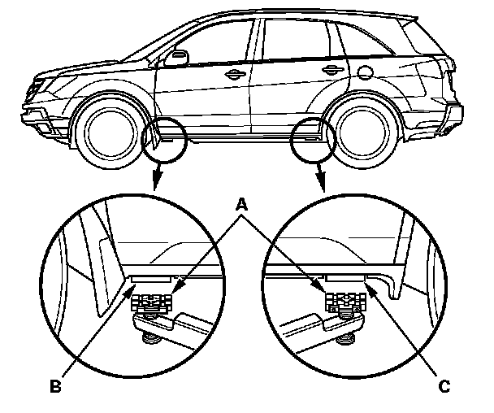
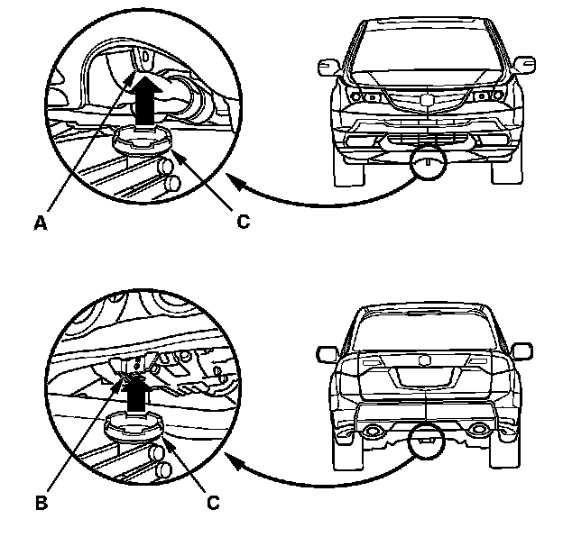

Lift and Support Points
General InformationLift and Support Points
NOTE: If you are going to remove heavy components such as suspension or the fuel tank from the rear of the vehicle, first support the front of the vehicle with tall safety stands. When substantial weight is removed from the rear of the vehicle, the center of gravity can change, causing the vehicle to tip forward on the lift.
Vehicle Lift
1. Position the lift blocks (A) under the vehicle's front support points (B) and rear support points (C).

2. Raise the lift a few inches, and rock the vehicle gently to be sure it is firmly supported.
3. Raise the lift to its full height, and inspect the vehicle support points for solid contact with the lift blocks.
Safety Stands
To support the vehicle on safety stands, use the same support points (B and C) as for a frame vehicle lift. Always use safety stands when working on or under any vehicle that is supported only by a jack.
Floor Jack
1. When lifting the front of the vehicle, set the parking brake. When lifting the rear of the vehicle, put the shift lever in neutral.
2. Block the wheels that are not being lifted.
3. Position the floor jack under the front jacking bracket (A) or the rear jacking bracket (B). Center the jacking bracket on the jack lift platform (C), and jack up the vehicle high enough to fit the safety stands under it.

4. Position the safety stands under the support points and adjust them so the vehicle is level.
5. Lower the vehicle onto the stands.